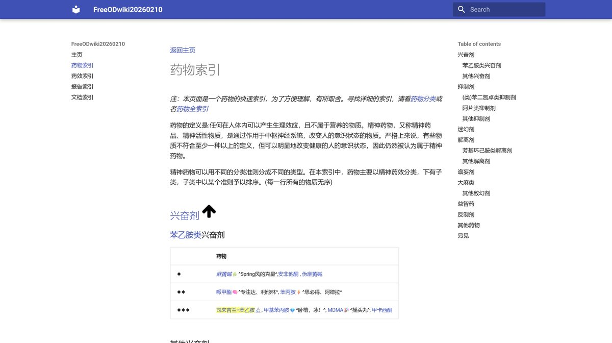
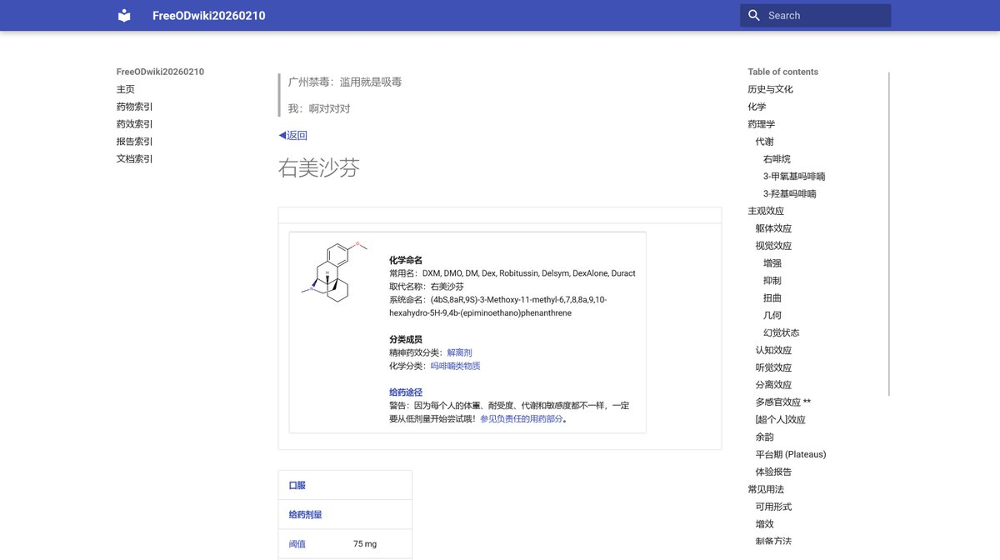

RT @SalviaSWC: 喜报：
https://t.co/KBhTgHj4Py
已经建立完毕，虽然目前还是测试版，有很多bug。部署是采用mkdocs，省去了wikijs不少看似花哨实则麻烦还不实用的内容🤓
欢迎大家来看哦🥹
https://t.co/BgOd6NiVlv …

欢迎大家来看哦🥹
https://t.co/BgOd6NiVlv …


喜报：https://t.co/KBhTgHj4Py已经建立完毕，虽然目前还是测试版，有很多bug。部署是采用mkdocs，省去了wikijs不少看似花哨实则麻烦还不实用的内容🤓
欢迎大家来看哦🥹
https://t.co/BgOd6NiVlv是已故的爱德华有权限的。他的服务器好像出了点问题，我们没权限，没法帮他修，该网站的内容会停止更新 https://t.co/GnZfnvP6AT
欢迎大家来看哦🥹
https://t.co/BgOd6NiVlv是已故的爱德华有权限的。他的服务器好像出了点问题，我们没权限，没法帮他修，该网站的内容会停止更新 https://t.co/GnZfnvP6AT